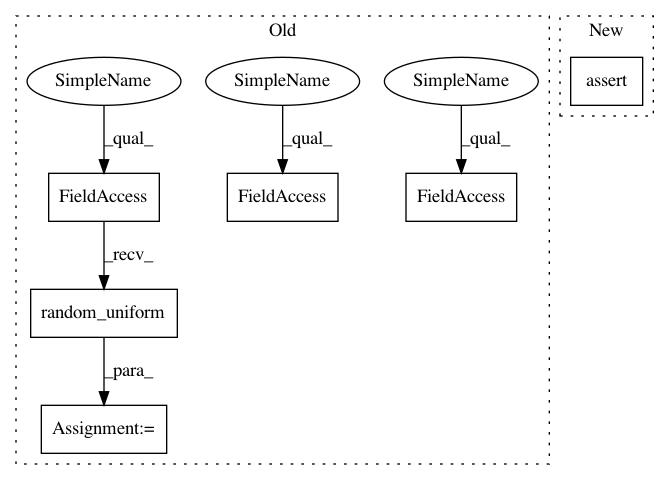

7acb7836e62c5e878d29b8aa267b27eee42825ed,tests/test_hypersphere.py,TestHypersphereMethods,test_mean_and_belongs,#TestHypersphereMethods#,436
Before Change
@geomstats.tests.np_only
def test_mean_and_belongs(self):
point_a = self.space.random_uniform(bound=0.5)
point_b = self.space.random_uniform(bound=0.5)
point_c = self.space.random_uniform(bound=0.5)
result = self.metric.mean([point_a, point_b, point_c])
self.assertTrue(self.space.belongs(result))
After Change
mean = self.metric.mean([point_a, point_b])
result = self.space.belongs(mean)
expected = gs.array([[True]])
self.assertAllClose(result, expected)
def test_diameter(self):
dim = 2
sphere = Hypersphere(dim)
In pattern: SUPERPATTERN
Frequency: 4
Non-data size: 6
Instances
Project Name: geomstats/geomstats
Commit Name: 7acb7836e62c5e878d29b8aa267b27eee42825ed
Time: 2019-06-16
Author: ninamio78@gmail.com
File Name: tests/test_hypersphere.py
Class Name: TestHypersphereMethods
Method Name: test_mean_and_belongs
Project Name: geomstats/geomstats
Commit Name: d23fc08bab289d4f33b17c4dcc7782b56ee6f7c7
Time: 2018-12-31
Author: ninamio78@gmail.com
File Name: tests/test_hypersphere.py
Class Name: TestHypersphereMethods
Method Name: test_mean_and_belongs
Project Name: geomstats/geomstats
Commit Name: fb5ddabf1cea71e36d62f1557f72b28dfa290af8
Time: 2018-12-13
Author: ninamio78@gmail.com
File Name: tests/test_matrices_space.py
Class Name: TestMatricesSpaceMethods
Method Name: test_is_symmetric_vectorization
Project Name: geomstats/geomstats
Commit Name: 7acb7836e62c5e878d29b8aa267b27eee42825ed
Time: 2019-06-16
Author: ninamio78@gmail.com
File Name: tests/test_hypersphere.py
Class Name: TestHypersphereMethods
Method Name: test_mean_and_belongs
Project Name: geomstats/geomstats
Commit Name: ecb22f715ce7c785ef85ecbb067cf74238944a83
Time: 2018-12-12
Author: ninamio78@gmail.com
File Name: tests/test_matrices_space.py
Class Name: TestMatricesSpaceMethods
Method Name: test_is_symmetric_vectorization